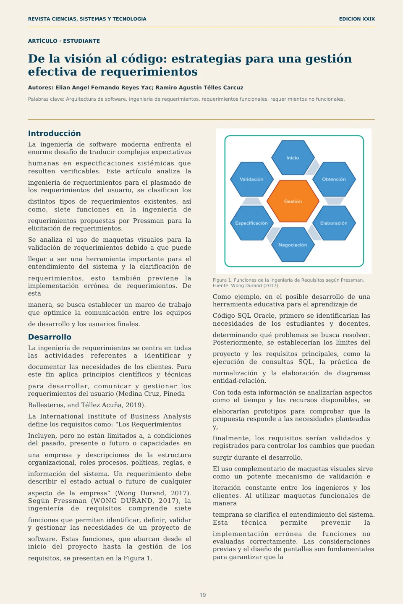
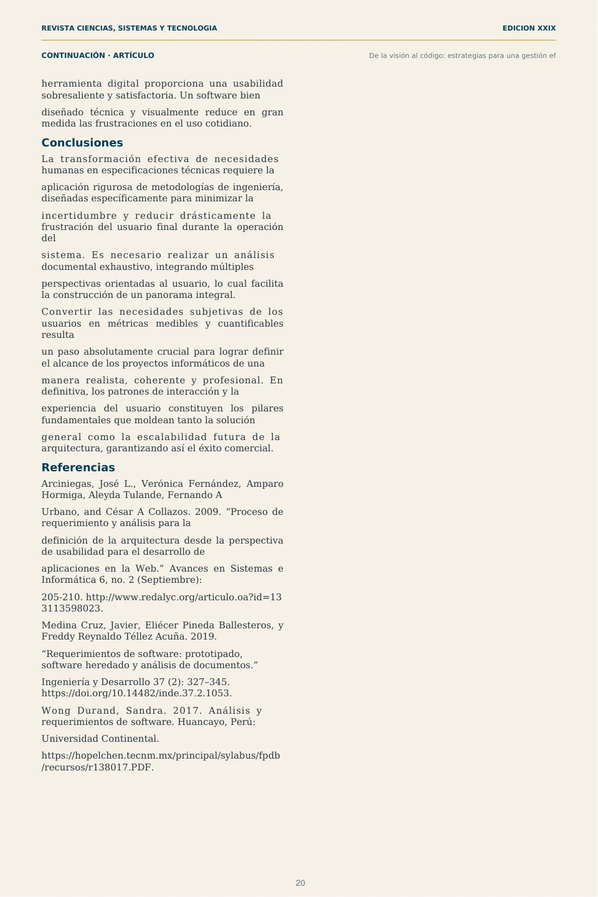

De la visión al código
Introducción
La ingeniería de software moderna enfrenta el enorme desafío de traducir complejas expectativas
humanas en especificaciones sistémicas que resulten verificables. Este artículo analiza la
ingeniería de requerimientos para el plasmado de los requerimientos del usuario, se clasifican los
distintos tipos de requerimientos existentes, así como, siete funciones en la ingeniería de
requerimientos propuestas por Pressman para la elicitación de requerimientos.
Se analiza el uso de maquetas visuales para la validación de requerimientos debido a que puede
llegar a ser una herramienta importante para el entendimiento del sistema y la clarificación de
requerimientos, esto también previene la implementación errónea de requerimientos. De esta
manera, se busca establecer un marco de trabajo que optimice la comunicación entre los equipos
de desarrollo y los usuarios finales.
Desarrollo
La ingeniería de requerimientos se centra en todas las actividades referentes a identificar y
documentar las necesidades de los clientes. Para este fin aplica principios científicos y técnicas
para desarrollar, comunicar y gestionar los requerimientos del usuario (Medina Cruz, Pineda
Ballesteros, and Téllez Acuña, 2019).
La International Institute of Business Analysis define los requisitos como: “Los Requerimientos
Incluyen, pero no están limitados a, a condiciones del pasado, presente o futuro o capacidades en
una empresa y descripciones de la estructura organizacional, roles procesos, políticas, reglas, e
información del sistema. Un requerimiento debe describir el estado actual o futuro de cualquier
aspecto de la empresa” (Wong Durand, 2017). Según Pressman (WONG DURAND, 2017), la ingeniería de requisitos comprende siete
funciones que permiten identificar, definir, validar y gestionar las necesidades de un proyecto de
software. Estas funciones, que abarcan desde el inicio del proyecto hasta la gestión de los
requisitos, se presentan en la Figura 1.
Figura 1. Funciones de la Ingeniería de Requisitos según Pressman. Fuente: Wong Durand (2017).
Como ejemplo, en el posible desarrollo de una herramienta educativa para el aprendizaje de
Código SQL Oracle, primero se identificarían las necesidades de los estudiantes y docentes,
determinando qué problemas se busca resolver. Posteriormente, se establecerían los límites del
proyecto y los requisitos principales, como la ejecución de consultas SQL, la práctica de
normalización y la elaboración de diagramas entidad-relación.
Con toda esta información se analizarían aspectos como el tiempo y los recursos disponibles, se
elaborarían prototipos para comprobar que la propuesta responde a las necesidades planteadas y,
finalmente, los requisitos serían validados y registrados para controlar los cambios que puedan
surgir durante el desarrollo.
El uso complementario de maquetas visuales sirve como un potente mecanismo de validación e
iteración constante entre los ingenieros y los clientes. Al utilizar maquetas funcionales de manera
temprana se clarifica el entendimiento del sistema. Esta técnica permite prevenir la
implementación errónea de funciones no evaluadas correctamente. Las consideraciones previas y el diseño de pantallas son fundamentales para garantizar que la
Conclusiones
La transformación efectiva de necesidades humanas en especificaciones técnicas requiere la
aplicación rigurosa de metodologías de ingeniería, diseñadas específicamente para minimizar la
incertidumbre y reducir drásticamente la frustración del usuario final durante la operación del
sistema. Es necesario realizar un análisis documental exhaustivo, integrando múltiples
perspectivas orientadas al usuario, lo cual facilita la construcción de un panorama integral.
Convertir las necesidades subjetivas de los usuarios en métricas medibles y cuantificables resulta
un paso absolutamente crucial para lograr definir el alcance de los proyectos informáticos de una
manera realista, coherente y profesional. En definitiva, los patrones de interacción y la
experiencia del usuario constituyen los pilares fundamentales que moldean tanto la solución
general como la escalabilidad futura de la arquitectura, garantizando así el éxito comercial.
Referencias
Arciniegas, José L., Verónica Fernández, Amparo Hormiga, Aleyda Tulande, Fernando A
Urbano, and César A Collazos. 2009. “Proceso de requerimiento y análisis para la
definición de la arquitectura desde la perspectiva de usabilidad para el desarrollo de
aplicaciones en la Web.” Avances en Sistemas e Informática 6, no. 2 (Septiembre):
205-210. http://www.redalyc.org/articulo.oa?id=13 3113598023.
Medina Cruz, Javier, Eliécer Pineda Ballesteros, y Freddy Reynaldo Téllez Acuña. 2019.
“Requerimientos de software: prototipado, software heredado y análisis de documentos.”
Ingeniería y Desarrollo 37 (2): 327–345. https://doi.org/10.14482/inde.37.2.1053.
Wong Durand, Sandra. 2017. Análisis y requerimientos de software. Huancayo, Perú:
Universidad Continental.
https://hopelchen.tecnm.mx/principal/sylabus/fpdb /recursos/r138017.PDF.
Ver diseño original de las páginas

